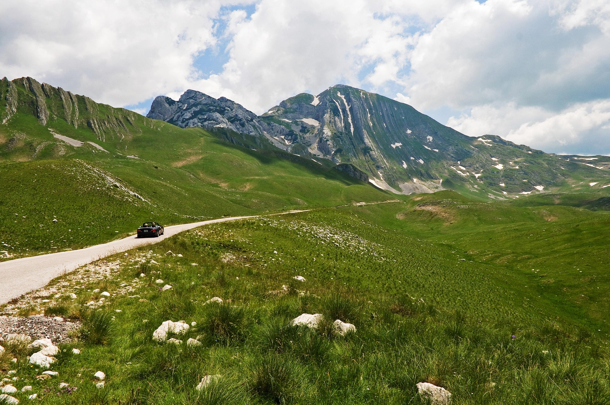
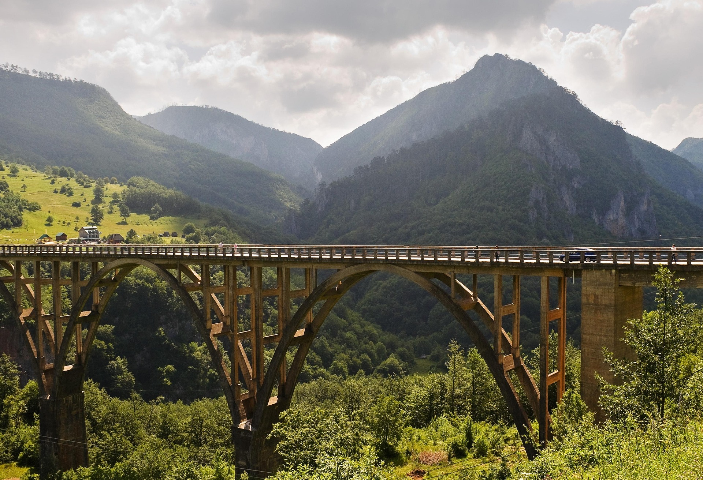
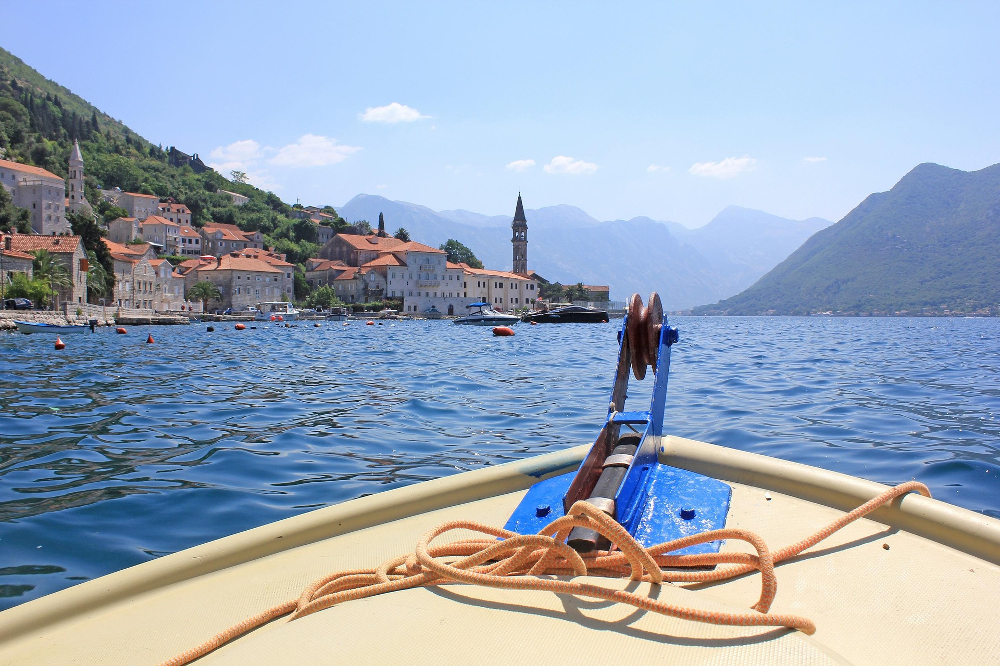
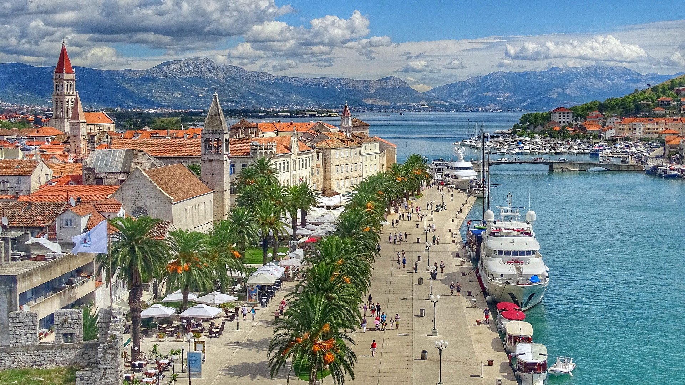
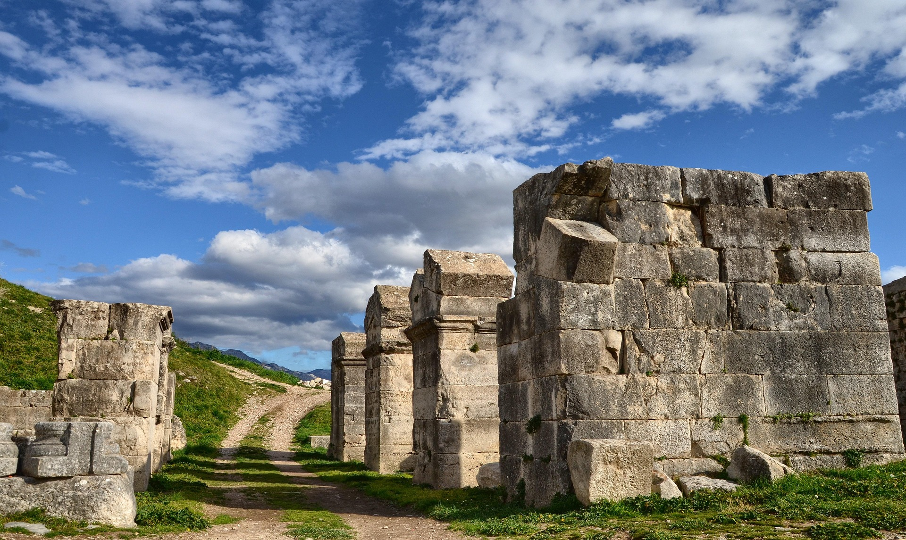

Balkan Roadbook 2026
Zemljevidi
Glavne etape, peš poti in izleti.
6 pripravljenih vodičev
Izleti
Panoramske vožnje, aktivna doživetja, izlet z ladjo in tri možnosti za petnajsti dan v okolici Splita. Vsaka kartica vodi do samostojnega vodiča z načrtom poti, postanki, praktičnimi informacijami in pomembnimi povezavami.

Panoramski roadtrip
Durmitor Ring
Krožna panoramska vožnja po narodnem parku Durmitor s prelazom Sedlo, visokogorskimi razgledi, samotnimi vasmi in fotografskimi postanki.

Aktivni izlet
Rafting po Tari
Spust po kristalno čisti reki skozi enega najglobljih kanjonov v Evropi, z organiziranim prevozom, opremo in postanki ob najlepših delih Tare.

Izlet z ladjo
Boka Kotorska
Plovba po zalivu med Perastom, otoškimi cerkvami, starimi pomorskimi mesti in gorami, ki se strmo spuščajo proti morju.

Obmorski mestni izlet
Trogir in Kaštela
Počasno raziskovanje Unescovega Trogirja, njegovih kamnitih ulic, katedrale in trdnjave, nato pa vožnja do fotogeničnega Kaštilca v Kaštel Gomilici.

Zgodovinski izlet
Salona in Klis
Potovanje od nekdanje prestolnice rimske Dalmacije do trdnjave, ki je stoletja varovala prehod med dalmatinsko obalo in balkanskim zaledjem.

Narodni park
Narodni park Krka
Sproščen dan ob Skradinskem buku, lesenih sprehajalnih poteh in starih mlinih, z vožnjo z ladjo iz Skradina do območja slapov.
Trogir in Kaštela ponujata najpočasnejši mediteranski ritem, Salona in Klis najbogatejši zgodovinski okvir, Narodni park Krka pa sproščen dan v naravi. Končna odločitev je lahko odvisna od vremena, vročine in energije po dveh tednih poti.